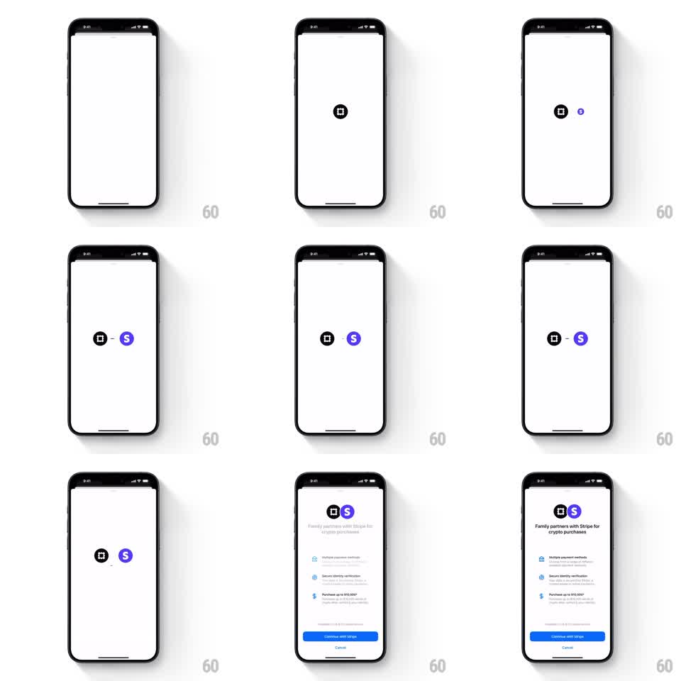

Media
Frame-by-frame

Rebuild this animation 1:1: Family's Stripe partnership intro - the centered app logo is joined by the Stripe logo sliding in to dock beside it, then the pair scales up and travels to the top as setup content rises from below.

Rebuild this animation 1:1: Family's Stripe partnership intro - the centered app logo is joined by the Stripe logo sliding in to dock beside it, then the pair scales up and travels to the top as setup content rises from below. ## Integration Integration: stack-agnostic spec - springs given as stiffness/damping, timed motions as duration + curve; map every value to your framework and animation library of choice. ## Scene White onboarding screen. Cast: Family's black app icon (rounded square), Stripe's purple circle "S" glyph, a short connecting dash between them, and a setup sheet (headline "Family partners with Stripe for crypto purchases", three feature rows, blue "Continue with Stripe" button, Cancel link). ## Motion spec Pattern: choreographed multi-stage entrance. - Stage 1: app logo fades/scales in at dead center (0.8 -> 1, 250ms, ease-out). - Stage 2: Stripe logo slides in from the right edge to sit just right of center (~300ms, ease-out); a connecting dash draws between the two logos (150ms). - Stage 3: the joined pair scales up slightly and travels to the upper third (~350ms, ease-in-out) while the setup sheet's content rises from the bottom (fade + translateY 24px -> 0, 300ms, 80ms row stagger). - Button and Cancel fade in last (150ms). ## Calibration - The docking moment (dash draw) is the beat - give it a visible pause (~200ms) before stage 3. - Both logos move as one rigid unit after docking. ## Reduced motion Both logos fade in pre-joined; content fades in without travel. ## Don't miss - The Stripe logo enters from off-screen; it does not fade in place. - The connecting dash is horizontal, stroke-thin, and drawn between the glyphs, not under them.